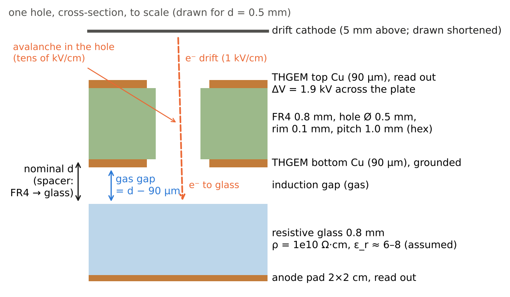
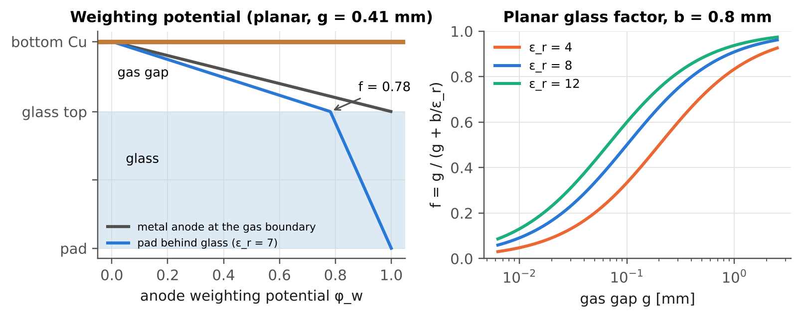
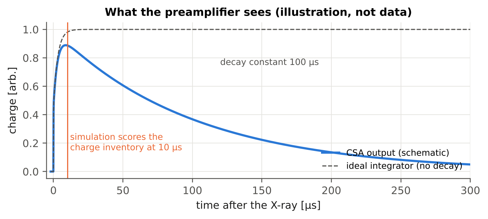
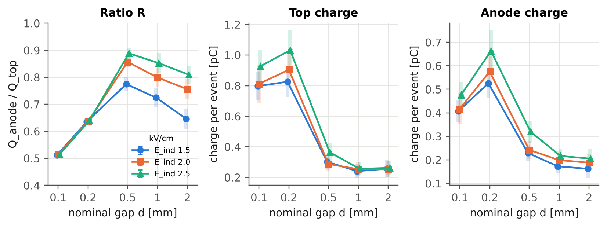
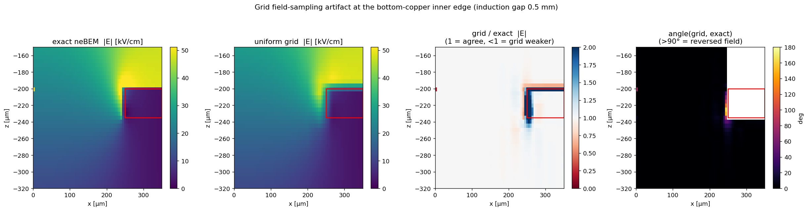
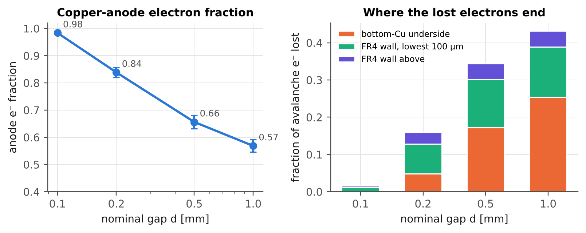
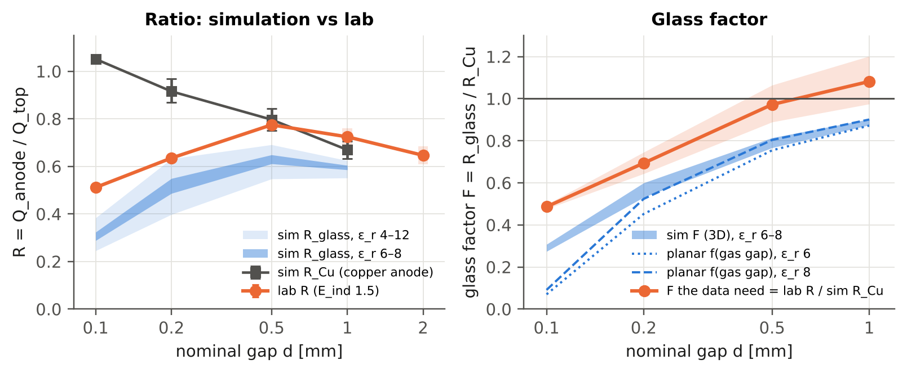
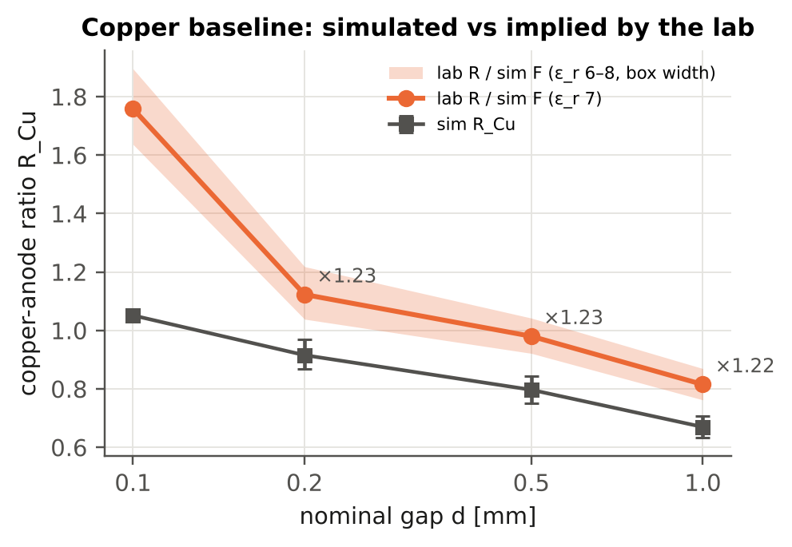
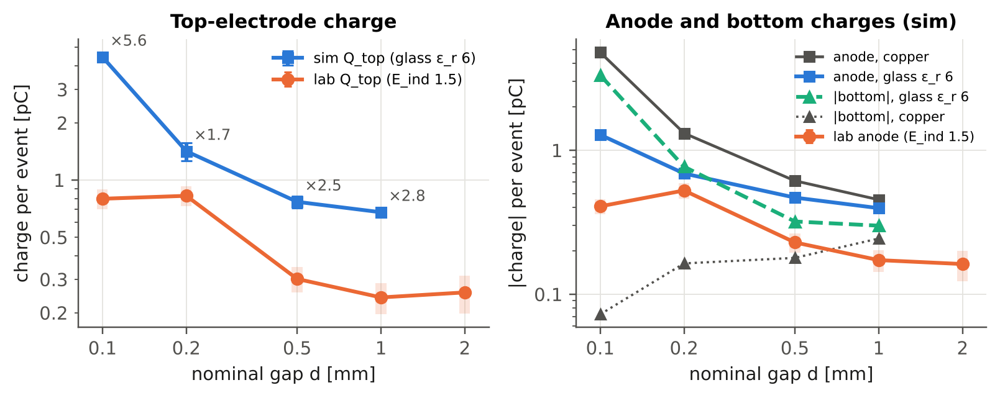

The observation. In a thick gaseous electron multiplier (THGEM) read out on both its top electrode and on an anode pad behind 0.8 mm of resistive glass, the ratio of anode to top charge, R, falls from 0.72–0.89 at induction gaps of 0.5–1 mm (depending on the induction field) to 0.64 at 0.2 mm and 0.51 at 0.1 mm. At 0.1 and 0.2 mm the ratio does not depend on the induction field. At the same time the top charge grows three- to fourfold below 0.5 mm.
The leading explanation. The electrons that reach the anode stop on the surface of the glass, not on the metal pad. On the microsecond time scale of the readout, the glass behaves as a dielectric, so the pad only "sees" a fraction F of those electrons, and the rest of the signal appears on the THGEM bottom electrode. F drops as the gas gap shrinks. With the real detector geometry, the simulated F is 0.88–0.90 at 1 mm, 0.77–0.81 at 0.5 mm, 0.53–0.60 at 0.2 mm and 0.27–0.31 at 0.1 mm (glass εr 6–8). This is the only mechanism found so far that lowers R in the observed direction and does not depend on the field.
What the full simulation gets right and wrong. Each simulation is compared with the lab series taken at the same induction field (1.5 kV/cm). (1) From 0.2 to 1 mm, the simulated R with glass has the right gap dependence but is about 20 % too low: the lab R is 1.22–1.23× the simulated one at all three gaps (glass εr 7). Equivalently, the copper-anode baseline RCu that the lab implies falls with the gap just like the simulated one (1.05 → 0.67, from avalanche electrons lost on the underside of the bottom copper and the lowest hole wall), but sits about 1.22× higher. The remaining problem at these gaps is therefore a roughly gap-independent scale on the copper/transport side, not the shape. (2) The simulated top charge is 1.7–2.8× too high at 0.2–1 mm. (3) The 0.1 mm point is a clear miss (top charge 5.6× too high; R 0.29–0.32 against 0.51), probably because the real 0.1 mm gap is not a clean, uniform 10 µm gas gap.
Ruled out as the cause of the gap dependence: grid-sampling artefacts (found and fixed), mesh, drift-gap length, attachment, space charge, the avalanche approximation, gain level, corner rounding (within the tested range), FR4 charging-up (iterative and fully-charged limit), readout impedance, and glass surface charging (at ρ = 1010 Ω·cm).
Most informative next steps (lab, cheapest first): a test pulse into the anode channel at 0.1 and ≥1 mm; a bare-copper-anode measurement, which would measure RCu and F directly; a measurement of the real 0.1 mm gap and its flatness; a measurement of the glass εr. On the simulation side, the main candidate is the hexagonal hole lattice, which has not been simulated yet.
How to read this report. Every number is labelled by where it comes from: lab measured on the detector; sim taken from a simulation output; inferred our reading of those numbers; assumed an input nobody has measured. Sections 2 and 3 are background for a newcomer; a reader who knows gaseous detectors can start at Section 4. The authoritative technical record is docs/anode_charge_fraction.md and the run log docs/STATUS.md in the repository lmoleri/THGEM-garfield (commit d431c49). This report adds no new simulations, and its plots are redrawn from the result tables. Revision of 22 November 2026: the lab values are now the exact values extracted from the experimenter's plots, with their uncertainties. The first version compared the simulation (Eind 1.5 kV/cm) with an R series taken at 2.0 kV/cm; this changed the conclusions at 0.5 and 1 mm (Sections 4.3 and 6).
A THGEM is a thin printed-circuit board, copper-clad on both sides and drilled with a dense pattern of sub-millimetre holes. A voltage across the board creates a strong field inside the holes, where electrons multiply in an avalanche. Below the THGEM there is a narrow induction gap and then a readout anode. In this detector, the anode is a metal pad covered by 0.8 mm of resistive glass.
Two electrodes are read out with charge-sensitive preamplifiers: the THGEM top copper and the anode pad. For each X-ray event, both give a charge, and the quantity of interest is their ratio
The ratio was measured as a function of the induction gap d for three induction fields. It drops sharply at small gaps (Fig. 4). At Eind = 1.5 kV/cm it is 0.51, 0.64, 0.77, 0.72 and 0.65 at d = 0.1, 0.2, 0.5, 1 and 2 mm lab. The aim of the study is to understand this drop with a first-principles simulation in Garfield++, and to find out what the simulation still gets wrong.
Why it matters: the anode signal is what a THGEM-based detector would normally use for position or energy information. If the anode signal depends strongly on the gap, small mechanical variations in the gap (flatness, spacer tolerance) translate directly into gain non-uniformity, and the gap cannot be shrunk freely to reduce signal spread or improve timing.
The THGEM in this study is a 0.8 mm FR4 (glass-fibre epoxy) board with 90 µm of copper on each face. It has holes of 0.5 mm diameter on a hexagonal pattern with 1.0 mm pitch. Around each hole, the copper is etched back by 0.1 mm (the rim), so that the bare FR4 is exposed in a ring around the hole. The rim reduces the chance of discharges at the sharp copper edge. Figure 1 shows one hole to scale.

There are three field regions, from top to bottom:
A 5.9 keV X-ray (from an 55Fe source) is absorbed by photo-effect in the argon, and the photoelectron loses its energy by ionising the gas. On average it takes about W ≈ 26 eV to make one electron–ion pair in argon, so each X-ray frees about
within a cloud of a few hundred µm. The study uses 227 as a fixed scaling convention to convert simulated per-electron charges into charge per event.
In an electric field, an electron in a gas gains energy from the field and loses it in collisions. It quickly reaches a constant average drift velocity along the field, of order cm/µs for electrons in argon mixtures. The positive ions are about a thousand times slower. Collisions also make the electrons spread out (diffusion). Some electrons are captured by electronegative molecules (attachment); in Ar/CO₂ this effect is small and was found not to depend on the gap. All these transport properties depend on the gas and the local field. They are computed by Magboltz, which solves the Boltzmann equation from electron–molecule cross sections, and are stored in a gas table.
Above a few tens of kV/cm, an electron gains enough energy between collisions to ionise, and each new electron does the same. The number of ionisations per unit length is the first Townsend coefficient α(E), which rises very steeply with the field. Along a path s, the mean multiplication is
where η is the attachment coefficient. Because of the exponential, small field changes give large gain changes. In this detector the simulated gain roughly doubles for every 50 V on the THGEM sim. Argon–CO₂ mixtures also show the Penning effect: excited argon atoms can ionise CO₂ molecules, which adds ionisation. Garfield++ models this with a transfer probability r; the study uses r = 0.405 assumed (Garfield's default for this mixture, not measured here).
Charge scale check: with 227 primaries and a gain of 2×104, an event makes 227 × 2×104 × 1.6×10−19 C ≈ 0.7 pC of avalanche electrons. That is the order of magnitude of the charges in this study.
After the avalanche, the charges spread over several places, and this is the core of the problem:
A common beginner's picture is that an electrode "counts" the electrons that hit it. That is not how the signal arises. A charge near a set of grounded electrodes induces image charges on all of them. When the charge moves, the image charges change, and currents flow in the external circuits. The signal on an electrode starts the moment the charge starts moving, not when it arrives. It can be large on an electrode that never collects any charge, and it can even have the opposite sign. This is why the THGEM top electrode gives a large signal even though most avalanche electrons leave in the other direction: the slow ions moving up from the bottom of the hole induce it.
The Shockley–Ramo theorem makes this quantitative. For each electrode k, define a weighting potential φk(x): the potential obtained by putting electrode k at 1 V and all other electrodes at 0 V, with all free charges removed and all dielectrics left in place. Its negative gradient is the weighting field Ek. A point charge q moving with velocity v then induces on electrode k the current
and moving from x0 to x1 it induces the charge
(The sign convention here is that an electron collected on an electrode gives that electrode a signal of −e. Textbooks differ by an overall sign.) Two points are worth stressing:
Inventory form. Electrons and ions are created in pairs at the same point, so their initial contributions cancel. The induced charge on electrode k at time T is therefore just a sum over where every charge is at time T:
This is the form used in the simulation: take a snapshot of all charges at T = 10 µs and weight each one with φk. Once all charges have stopped on conductors, Qk equals the net charge collected on electrode k. As long as charges are still moving, or sit on insulators, it does not.
Here the electrons that leave the hole do not reach the metal pad. They stop on the top surface of the glass. What does the pad see?
On short time scales the glass is a dielectric. A resistive layer of resistivity ρ and permittivity εr relaxes surface charge with a time constant of order ρε0εr. For a charge on a glass of thickness b facing a gas gap g, the planar result is (Riegler, ref. [4])
With ρ = 1010 Ω·cm = 108 Ω·m lab, εr ≈ 7 assumed and b = 0.8 mm, τ is about 8 ms at g = 0.41 mm and about 80 ms at g = 10 µm. Both are far longer than the 10–100 µs over which the signal is read. So, for the signal, the glass is a pure dielectric, and the weighting potential must be computed with the glass in place.
The planar glass factor. Take the bottom copper at weighting potential 0 and the pad at 1, with gas gap g and glass thickness b between them. The normal component of D = εE is continuous, so Eglass = Egas/εr, and Egasg + Eglassb = 1. The weighting potential at the glass surface is then
An electron that drifts from the bottom copper to the glass surface gives the pad only −f e instead of −e. The rest, −(1−f)e, appears on the bottom copper. The glass looks like an extra gas gap of thickness b/εr (0.1–0.13 mm for εr 6–8). When the real gap is comparable to or smaller than that, the pad signal is strongly suppressed (Fig. 2). Over times much longer than τ, the charge leaks through the glass and the pad eventually receives the full −e, but the preamplifier has long since forgotten it by then.

Each electrode is connected to a charge-sensitive preamplifier (CSA) (NAICAM DCB209A). It integrates the induced current onto a feedback capacitor, so its output step is proportional to the induced charge. The output decays with a time constant of 100 µs. There is no shaper; the charge is read from the plateau of the digitised pulse. The electron part of the signal is complete within nanoseconds. The ion part near the hole develops over microseconds, while the ion drift through the 5 mm drift gap (~370 µs) is longer than the decay, so that part of the signal is partly lost. Figure 3 sketches this. The simulation scores the charges at 10 µs. The glass factor F is the same at 5, 10 and 20 µs sim, but RCu and Qtop at the true readout time have not been checked (open point 5 in Section 8).

Input impedance. The induced current divides between the CSA input and any capacitance from the electrode to the other electrodes. The DCB209A presents an effective input capacitance of about 1.84 nF, against 2–55 pF from the anode pad to the grounded bottom copper. So more than 97 % of the induced charge reaches the preamplifier (Section 7).
| Symbol | Definition | Comment |
|---|---|---|
| R (lab) | Qanode/Qtop measured, glass anode | The quantity to explain |
| Rglass | Simulated Qanode/Qtop scored with the weighting potential of the pad behind glass | Direct counterpart of the lab R |
| RCu | The same charges scored with a copper anode at the glass surface | What a bare copper anode would give |
| F = Rglass/RCu | Pure glass weighting factor | Planar limit f = g/(g+b/εr) |
| Anode e⁻ fraction | Fraction of avalanche electrons (weighted, excluding attachment) that end on a copper anode | Transport-only quantity; from a separate run |
Because Rglass and RCu are scored on the same charges, their statistical fluctuations largely cancel in F. That is why F has a much smaller uncertainty (±0.002) than R (±5 %).
| Item | Value | Status |
|---|---|---|
| THGEM substrate | FR4, 0.8 mm | lab |
| Copper | 90 µm on both faces (plate ≈ 0.98 mm) | lab |
| Holes | Ø 0.5 mm, pitch 1.0 mm, hexagonal lattice, rim 0.1 mm | lab (simulated as square) |
| Active area | ≈ 2 × 2 cm (THGEM and anode pad) | lab |
| Drift gap, field | 5 mm, 1 kV/cm | lab |
| THGEM voltage | ΔV = 1.9 kV | lab |
| Gas | Ar/CO₂ 93:7, flowing | lab |
| Source, rate | 55Fe 5.9 keV, ~10 Hz | lab |
| Anode | Readout pad behind 0.8 mm resistive glass, ρ = 1010 Ω·cm | lab |
| Glass permittivity | εr 6–8 used (scanned 4–12) | assumed |
| Glass rear contact | Ideal ohmic contact to the pad over the full area | assumed |
| Readout | DCB209A CSAs on top and anode; Cin,eff ≈ 1.84 nF; decay 100 µs; plateau readout, no shaper; bottom copper hard-grounded; HV via the 40 MΩ bias input | lab (Cin,eff from the manual) |
The spacers set the nominal gap d between the THGEM FR4 and the glass surface, not between the copper and the glass. The bottom copper is 90 µm thick, so the gas gap is d − 90 µm. The induction voltage was set as Eind × d, so the real field in the gas is higher than the nominal field:
| Nominal d [mm] | 0.1 | 0.2 | 0.5 | 1.0 |
|---|---|---|---|---|
| Gas gap d − 0.09 mm [µm] | 10 | 110 | 410 | 910 |
| Gas field 1.5 × d/(d − 0.09) [kV/cm] | 15 | 2.73 | 1.83 | 1.65 |
This correction was only established on 10 November 2026, and it changed the picture substantially (Section 10). At 0.1 mm nominal, the gas gap is only 10 µm, and the field there (15 kV/cm) is close to the field in the hole. A 10 µm gap held uniformly over 2×2 cm is mechanically demanding, which matters for the interpretation of the 0.1 mm point.

docs/report/lab_data/).| Nominal d [mm] | 0.1 | 0.2 | 0.5 | 1.0 | 2.0 |
|---|---|---|---|---|---|
| R, Eind 1.5 | 0.511 ± 0.008 | 0.635 ± 0.012 | 0.775 ± 0.025 | 0.724 ± 0.036 | 0.646 ± 0.037 |
| R, Eind 2.0 | 0.514 | 0.636 | 0.857 | 0.799 | 0.756 |
| R, Eind 2.5 | 0.514 | 0.639 | 0.889 | 0.852 | 0.809 |
| Qtop [pC], Eind 1.5 | 0.80 ± 0.09 | 0.83 ± 0.10 | 0.30 ± 0.05 | 0.24 ± 0.04 | 0.26 ± 0.06 |
| Qanode [pC], Eind 1.5 | 0.41 ± 0.05 | 0.53 ± 0.06 | 0.23 ± 0.03 | 0.17 ± 0.03 | 0.16 ± 0.04 |
Three features of the data matter for the interpretation:
Correction to the first version of this report. The earlier "measured R" (0.51 / 0.64 / 0.855 / 0.80 / 0.755) was the 2.0 kV/cm series, while the top charge and all simulations are at 1.5 kV/cm. The two series coincide below 0.5 mm, but at 0.5 and 1 mm the 1.5 series is 0.08 lower. All comparisons below now use the 1.5 series. A second, small caveat: the lab R agrees with Qanode/Qtop of the mean charges only to ≤ 3.4 %, so it is probably the mean of per-event ratios, while the simulation forms the ratio of summed charges.
The simulation is a single C++ program, src/thgem_sim.cc, built on Garfield++, CERN's toolkit for gaseous detectors. Its pieces are as follows.
The field is computed with neBEM, a boundary-element solver. Instead of meshing the whole volume, it places unknown charge densities on the surfaces of the conductors and dielectric interfaces, solves for them, and then computes the field anywhere as a sum over those surface elements. Because the THGEM is a periodic pattern, only one unit cell around a hole is modelled, with at least 9 periodic copies. The lattice is square; the real one is hexagonal (Section 8).
A key early finding was that interpolating the field from a pre-computed uniform grid, which is the usual speed-up, gives wrong fields right at the thin copper edge. Cells straddling copper and gas mix the strong gas field with the zero field inside the metal. This caused electrons to be over-extracted (Fig. 5). Since then, all transport uses the exact ("raw") neBEM field.

docs/figures/rawgrid_edge_field.png.The field mesh was checked: four times more elements change the field by 1–2 %. For the 10 µm gap, going from 2 021 to 13 938 elements changes the gap field by at most 3.3 %, and both give 15 kV/cm under the copper within 1–3 % sim.
A dense, 110-point Magboltz table for Ar/CO₂ 93:7 provides drift velocity, diffusion, Townsend and attachment coefficients as a function of field. Penning transfer is r = 0.405 assumed. A coarser 10-point table used early on underestimated α by 1.2–1.7×.
At a gain of 104–105, following every avalanche electron microscopically is too expensive. Instead, the simulation follows representative paths: an electron is drifted with Monte Carlo steps (AvalancheMC, including diffusion), and along the path it accumulates a weight, the expected number of electrons it stands for, from the local Townsend and attachment coefficients. The ions are created along the path in proportion to the local multiplication, and are drifted too. A path that happens to run through the highest-field region carries a very large weight. As a result, the weights are heavy-tailed: a few paths can dominate an average.
The effective sample size, ESS = (Σw)²/Σw², measures how many equally weighted paths the sample is worth. For example, 500 paths with ESS 74 behave statistically like 74 paths. Bootstrap intervals assume the tail is sampled well, so with a low ESS they can understate the true uncertainty. A check against microscopic tracking at the hole exit showed the same corner losses, so the local-field approximation is not the cause of the discrepancy sim. (This description simplifies the implementation; see docs/manual.md and docs/glass_signal_hypothesis.md for the details.)
The signal study works in two steps:
Because both arms use identical charges, the comparison is paired, and F = Rglass/RCu is very precise. The built-in checks are: charge conservation in every snapshot (≤ 5×10−15); weighting-potential partition Σφk = 1 (residual ≤ 7×10−13); all periodic copies evaluated exactly for the weighting fields (an approximation for distant copies had caused a 2 % error, now fixed); planar-glass benchmarks against the analytic formula (errors < 0.001 %); and regression tests for two trajectory edge cases found in production.
An important approximation: transport uses the field with a metal anode. Charge accumulating on the glass, or a DC voltage drop across it, would change that field. This is argued to be small in Section 7.
A separate run with a copper anode records where every weighted avalanche electron ends (anode, bottom-copper underside, FR4 wall by height, rim, top). This gives the anode electron fraction and the loss map in Fig. 6. It uses a separately built binary from ../THGEM_corner, which is not under version control (Section 9).
Intervals are 68 % bootstrap over weighted paths. Ratios are formed from pooled signed charges, not from averages of per-path ratios. Charges per event are per-primary values × 227.
Setup sim: Cu 90 µm, gas gaps 10/110/410/910 µm at the fields of Table 2, ΔV 1.9 kV, Ed 1 kV/cm, 5 mm drift, square lattice, uncharged insulators. The glass signal used 5 × 100 paths per gap (scored at 10 µs); the copper baseline used 3 × 600 paths per gap.

results/copper_baseline_gasgap/summary_cu90.csv.inferred As the gap grows, the induction field gets weaker relative to the hole field. More field lines from the hole exit then curl back onto the underside of the bottom copper, and the electrons that follow them are lost to the anode. This is a geometric effect. A run at about 10× lower gain (ΔV 1.77 kV, old 50 µm copper geometry) showed the same fall (0.88/0.80/0.69 at 0.1/0.2/0.5 mm), so it is not caused by the gain being too high.

results/glass_signal/quicktest_gasgap/summary_cu90.csv.Three things stand out in Fig. 7:
Since F is the most robust number in the simulation (pure electrostatics, paired, ±0.002), one can turn the comparison around: divide the lab R by the simulated F to get the copper-anode ratio the lab implies, and compare it with the simulated RCu (Fig. 8).

From 0.2 to 1 mm, the implied baseline (1.06–1.20, 0.95–1.01, 0.80–0.83) falls with the gap just like the simulated one (0.92, 0.80, 0.67), and the two differ by an almost constant factor of 1.22–1.23 inferred. Read this way, the simulation describes the gap dependence of both the glass effect and the copper hole-exit losses at these gaps, and what is left is a gap-independent scale of about 20 %. In absolute terms the simulated Rglass is 0.09–0.17 below the lab at 0.2–1 mm. Candidates for such a scale are discussed in Section 8, item 1. The field dependence of the lab R (about +15 % from 1.5 to 2.5 kV/cm at ≥ 0.5 mm, Section 4.3) is of the same size and can only come from transport, which makes electron extraction at the hole exit a natural suspect. At 0.1 mm the implied value (1.66–1.87) is far above the simulated 1.05, which is the 0.1 mm miss seen from another angle.
Caveat: this assumes the simulated F is right. A real glass εr outside 6–8 changes F most at small gaps (Section 8, item 4), so the "constant factor" reading is firmest at 0.5–1 mm.

The simulated top charge now has a data-like shape at 0.2–1 mm: a steep rise below 0.5 mm and flat above. Its 0.2/0.5 mm ratio is 1.86 against 2.7 measured, whereas it was 1.25 with the old geometry. Its scale, however, is 1.7–2.8× too high, which corresponds to roughly 25–30 V too much on the THGEM, given that the gain doubles every ~50 V inferred. At 0.1 mm the hole field continues into the 10 µm gap, the mean gain reaches 1.3×105, and the top charge is 5.6× the measured one. The simulated anode charge with glass is 1.3–1.5× (0.2 mm), 2.0–2.2× (0.5 mm), 2.3–2.4× (1 mm) and 3.1–3.5× (0.1 mm) the measured one.
| Nominal d | 0.1 mm | 0.2 mm | 0.5 mm | 1.0 mm |
|---|---|---|---|---|
| Qtop [pC] | 4.44–4.47 (0.80) | 1.42 (0.83) | 0.77 (0.30) | 0.68 (0.24) |
| Qtop sim/lab | 5.6 | 1.7 | 2.6 | 2.8 |
| Rglass | 0.29–0.32 (0.511) | 0.49–0.55 (0.635) | 0.61–0.65 (0.775) | 0.59–0.60 (0.724) |
| RCu | 1.05 | 0.92 | 0.80 | 0.67 |
| F = Rglass/RCu | 0.27–0.31 | 0.53–0.60 | 0.77–0.81 | 0.88–0.90 |
| Lab R / sim RCu (the F the data need) | 0.49 | 0.69 | 0.97 | 1.08 |
| Lab R / sim Rglass | 1.6–1.8 | 1.15–1.30 | 1.19–1.27 | 1.20–1.23 |
| Qanode with glass [pC] | 1.28–1.44 (0.41) | 0.69–0.78 (0.53) | 0.47–0.50 (0.23) | 0.40–0.41 (0.17) |
| Copper anode e⁻ fraction | 0.984 | 0.838 | 0.656 | 0.568 |
| … lost on bottom-Cu underside | 0.001 | 0.048 | 0.172 | 0.254 |
| … lost on lowest 100 µm of wall | 0.012 | 0.080 | 0.130 | 0.135 |
| Mean gain | 1.3×105 | 3.6×104 | 2.4×104 | 2.2×104 |
| |Qbottom| with glass [pC] | 3.2–3.3 | 0.68–0.77 | 0.29–0.32 | 0.29–0.30 |
Precision: charges ±6–10 %, R ±5 % (±1 % at 0.1 mm), F ±0.002 (paired), copper fraction ±0.02. ESS 74–189 of 500 for the glass top charge, 455–556 of 1800 for the copper baseline.
Each mechanism below was tested against the gap dependence. "Strength" says how firm the exclusion is, as judged in the study docs.
| Mechanism | Test | Why it is excluded | Strength |
|---|---|---|---|
| Transport-grid artefact at the copper edge | Raw neBEM vs grid; wall-release test | Real bug, and it caused the early over-extraction. Fixed: all runs since use raw neBEM. | Firm (fixed) |
| Field mesh | Elements ×4; 10 µm gap at 2 021 vs 13 938 elements | Field changes 1–2 % (≤ 3.3 % in the 10 µm gap). | Firm |
| Drift gap 1 vs 5 mm | Field comparison | < 1.4 % change in hole and gap field. | Firm |
| Electron attachment | CO₂ variation, Magboltz | Small and gap-flat. | Firm |
| Avalanche space charge; ions reaching the anode | Self-field estimate; ion field lines incl. charged rim | ~10³× too weak. Ions reach the anode only at 3–10 pC per event (lab 0.2–0.8 pC). | Firm (tested on the 0.4 mm plate) |
| Local-field (mean-avalanche) approximation | Weighted vs microscopic at the hole exit | Same corner loss. | Firm |
| Gain level as cause of the falling baseline | Gain-matched run, ΔV 1.77 kV | Same fall at ~10× lower gain (0.88/0.80/0.69, Cu 50 µm). | Firm |
| Copper-corner rounding | Radius 0–45 µm, 0.4 mm plate | Only 45 µm gives a flat trend; all stay far below the data. | Moderate (real radius unknown; old geometry) |
| FR4 charging-up, iterative | 12 neBEM iterations at 0.1 and 0.5 mm | No equilibrium; gain collapses 250–900×; extraction does not move toward the data. | Moderate |
| FR4 charging-up, fully charged limit | Fit of wall charge for zero normal field, 12 wall bands + rims, 0.5 mm | Clearing the wall needs 10–20 nC/cm², which cuts the hole field to ~0.4× (no gain). The measured gain allows ≲ 1–2 nC/cm², which lowers the wall field by only 10–15 %. Even a perfect FR4 shield leaves the bottom-copper loss, so the baseline would still fall. | Moderate (uniform zones, square lattice, no charged avalanche run) |
| Readout impedance / anode–bottom capacitance | Capacitive divider with DCB209A values | CAB 19–25 pF at 0.1 mm (glass) vs Cin,eff 1.84 nF → ≤ 1.3 % loss. The data would need Cin,eff ≈ 30–40 pF, ~50× below spec. | Moderate (relies on the manual; not measured) |
| Glass surface charging at 0.1 mm | Estimate with ρ = 1010 Ω·cm | Mean surface potential ≈ Jρb. With 0.41 pC × 10 Hz on ≥ 1 mm², it is ≈ 0.3 V against 15 V across the gap (≈ 2 %). | Moderate (holds unless the irradiated spot is ≪ 1 mm²) |
| Electron extraction fraction as the observable | Ions followed in 3D | Wrong observable: the top collects only ~45 % of the ions. Replaced by the induced charge on each electrode. | Firm (corrected) |
The induced current on the anode can flow either into the preamplifier or through the capacitance CAB between the anode pad and the grounded bottom copper. Both paths are capacitive, so the charge divides in a ratio that does not depend on frequency:
Cin,eff ≈ 1.84 nF is the 2 nF HV coupling capacitor in series with 100 nF and the virtual-ground capacitance A0Cf ≈ 30 nF, all from the manual. A parallel-plate estimate gives CAB of a few to a few tens of pF, so the loss is ≤ 1–3 %. To lose 40 %, the preamplifier input would have to be ~50× worse than specified. A test-pulse measurement (Section 8) would turn this calculation into a measurement.
The 0.1 mm point has only ~15 V across the 10 µm gap, so a few volts of charge on the glass would matter. Each event deposits about 1 pC of electrons on the glass, which over a ~1 mm² spot and a ~0.9 pF gap capacitance is about a 1 V step. That step decays with τ ≈ 80 ms (Section 3.3). An earlier version of this argument used τ = ε0εrρ ≈ 6 ms, which is wrong for a charge facing a thin gap; the docs record this correction. The exclusion still holds for a different reason: the mean potential of the glass surface is set by the current density alone, V = Jρb ≈ 0.3 V, independent of τ. It would fail only if the irradiated spot were much smaller than 1 mm², or if the rate per spot were much higher than assumed.
Ranked by how much of the discrepancy each could carry inferred:
results/hex_proxy_p093/ but was parked. A true hexagonal cell needs a mirror-symmetric p/2 × (√3/2)p unit cell.| Test | What it settles | Expected outcome |
|---|---|---|
| Test pulse into the anode channel, detector connected, at 0.1 mm and ≥ 1 mm | Readout impedance | ≤ 1.3 % change if the manual is right; ~40 % if impedance were the cause |
| Bare copper anode at the same gaps | Measures RCu directly, which tests both F = Rglass/RCu and the simulated copper baseline | Simulation predicts RCu 1.05/0.92/0.80/0.67 |
| Gap and flatness at 0.1 mm (feeler gauge, or capacitance across the gap) | Whether the 10 µm assumption holds | A larger or non-uniform gap would explain part of the 0.1 mm miss |
| Glass εr (capacitance of a known area) | Removes the main assumed input to F | — |
| Bottom-electrode readout at 0.1 mm | Confirms that the missing charge is on the bottom | ~3 pC with glass; it cannot separate glass from impedance |
Some considerations beyond the immediate discrepancy inferred:
../THGEM_corner) is not under version control; some drivers live under the gitignored results/; the dense gas table is not in gas/. The glass-signal binary is commit fb42296.anode_charge_fraction.md, STATUS.md, glass_signal_hypothesis.md), the project's archived notes, and the two result tables named in the figure captions. No simulation was run for it.top_charge.pdf, anode_charge.pdf, charge_ratio.pdf) directly from the drawing coordinates, so the extraction error is negligible. They are in docs/report/lab_data/.Several inputs were corrected along the way. Each correction changed the numbers, and none explained the data on its own. This history is why older notes and plots disagree with this report.
| Date (2026) | Step |
|---|---|
| ≤ 29 Oct | 0.4 mm plate, copper anode: found and fixed the transport-grid artefact; switched to weighted mean avalanches and to collected charges. The simulation still disagreed most at small gaps. Record: docs/extraction_ratio_investigation.md (historical). |
| 30 Oct | Corner-rounding sweep (0–45 µm): none matches. |
| 1 Nov | The real plate is 0.8 mm. This removed an 80–300× gain mismatch, but the trend stayed opposite to the data. |
| 2–4 Nov | Iterative FR4 charging: no explanation. |
| 4 Nov | The measurements used the glass anode, so every copper-anode comparison had been the wrong reference. The glass signal method was built and validated. |
| 5–8 Nov | Glass quick test (Cu 50 µm, gap from the copper): F alone matched the data at 0.1–0.5 mm (0.52/0.64/0.80/0.89 at εr 6; superseded). The copper baseline was found to fall with the gap; a gain-matched run showed this is geometric. |
| 9–10 Nov | Fully charged FR4 limit and readout impedance: both excluded. |
| 10–11 Nov | Real copper thickness (90 µm) and gap convention (gas gap d − 90 µm). The 0.2–1 mm shapes improved; 0.1 mm became a clear miss, and the "F alone matches" reading no longer holds. Glass ρ = 1010 Ω·cm. |
| 22 Nov | Exact lab values for all three induction fields. The earlier "measured R" was the 2.0 kV/cm series; compared at its own field (1.5 kV/cm), the simulation reproduces the 0.2–1 mm gap shape of R and is ~20 % low throughout, instead of needing F > 1. |
Other corrected inputs: copper 35 → 50 → 90 µm; drift gap 1 → 5 mm; lab gain "≲ 2.8×103" → measured top charge 0.24–0.83 pC.
| Term | Meaning |
|---|---|
| THGEM | Thick gaseous electron multiplier: a drilled, copper-clad PCB used as an avalanche stage. |
| THWELL | A THGEM whose bottom face sits directly on the readout, closing the holes from below. |
| Rim | Ring of copper etched back around each hole, exposing bare FR4. |
| Induction gap | The gas gap between the THGEM bottom and the anode. |
| Extraction / anode e⁻ fraction | Fraction of avalanche electrons that reach the anode. |
| Ion backflow | Ions that drift back through the hole into the drift region. |
| Weighting potential φk | Potential with electrode k at 1 V, the others at 0, no free charges, dielectrics present. |
| Shockley–Ramo theorem | Induced charge = q × change of weighting potential along the path. |
| CSA | Charge-sensitive (pre)amplifier: integrates the induced current. |
| neBEM | Nearly exact boundary element method; the field solver used in Garfield++. |
| Magboltz | Program computing electron transport coefficients in gases. |
| Penning transfer | Ionisation of one gas component by excited atoms of another. |
| ESS | Effective sample size of a weighted sample, (Σw)²/Σw². |
| Charging-up | Change of the field by charge accumulated on insulating surfaces. |
| R, RCu, Rglass, F | See Section 3.5. |
docs/anode_charge_fraction.md; run log: docs/STATUS.md; glass method: docs/glass_signal_hypothesis.md. Repository lmoleri/THGEM-garfield, commit d431c49.results/copper_baseline_gasgap/summary_cu90.csv (binary ../THGEM_corner/build/thgem_sim, unversioned; seeds 970–981).results/glass_signal/quicktest_gasgap/summary_cu90.csv (binary fb42296; seeds 661–695).results/gap10um_meshcheck/. Charged FR4 limit: results/charged_equilibrium/.archive/readout_impedance_2026-11-10.md.results/ is gitignored and lives only on the analysis machine.References are quoted from memory for orientation; check the bibliographic details before citing them formally.